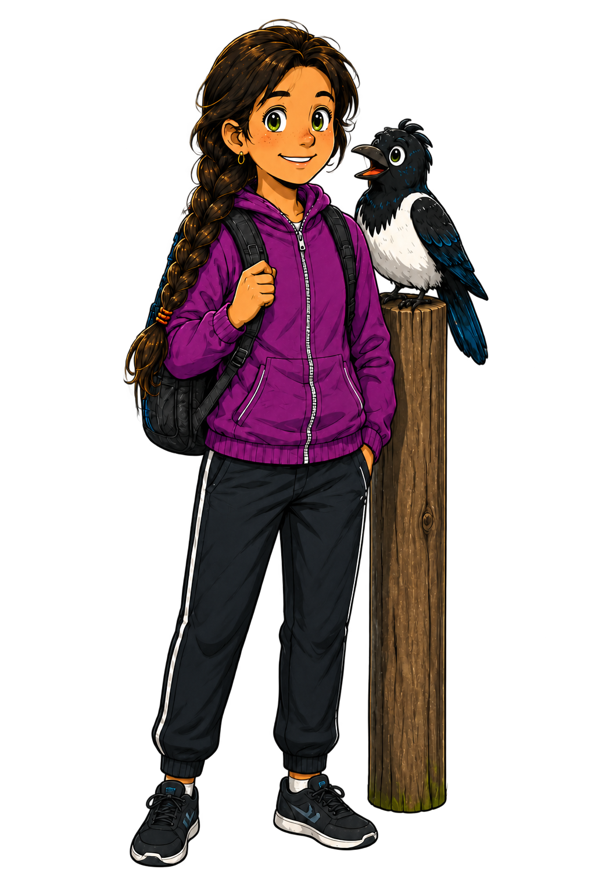

Maja & Pricken’s Biathlon Guides
Learn to Master the Wind – and Hit the Centre Even When It Blows
Biathlon Wind Guide · Version 2.1Maja is learning to read the wind. Pricken has a bird’s-eye view. Join them and practise too!
Train with Maja and Pricken
Learn to read the nearest wind flag, compare the current conditions with those at zeroing and understand how the shot group may be affected.
Maja: I may not know everything yet – but I want to understand how the wind works.
Pricken: I have the wind completely figured out! At least when my feathers are pointing the right way.
Educational guidance – not a ballistic calculator.
1. Where was the wind coming from when you zeroed?
Look at the wind flag nearest to you and select where the wind is coming from. If it is completely calm, select Calm – no direction is required.
🎯 TARGETS
🧍
2. What did the wind flag look like?
The flag points in the direction the wind is blowing. Select the image that most closely matches the wind flag nearest to you.
3. Where is the wind coming from now?
Read the same nearest wind flag. Select the wind direction first and then the flag deflection. If it is calm, no direction is required.
🎯 TARGETS
🧍
4. What does the wind flag look like now?
Select the flag image that most closely matches the current wind.
🎓 Learn to read the wind
Start with the reference wind.
Compare the current wind with the conditions in which you zeroed the rifle.
Compare the current wind with the conditions in which you zeroed the rifle.
Use the nearest wind flag.
This is the only wind flag used by the Wind Guide.
This is the only wind flag used by the Wind Guide.
Verified ballistic reference.
Lapua’s table for Polar Biathlon 2.59 g gives 25 mm of wind drift at 50 metres in a 4 m/s full-value crosswind. In prone, the hit-zone radius is 22.5 mm, illustrating why a centred group matters.
Lapua’s table for Polar Biathlon 2.59 g gives 25 mm of wind drift at 50 metres in a 4 m/s full-value crosswind. In prone, the hit-zone radius is 22.5 mm, illustrating why a centred group matters.
The wind flag is an educational guide.
The Lapua value verifies bullet drift, but it does not define the exact wind speed represented by a particular flag deflection. The Wind Guide therefore does not attach invented m/s or click values to the flag images.
The Lapua value verifies bullet drift, but it does not define the exact wind speed represented by a particular flag deflection. The Wind Guide therefore does not attach invented m/s or click values to the flag images.
A crosswind can also move the shot group vertically.
A U.S. Army Ballistic Research Laboratory study of Eley Tenex .22 LR at 50 metres shows a diagonal 10–4 pattern for right-hand rifling twist. The Wind Guide therefore shows a smaller educational elevation tendency – approximately one quarter of the relative horizontal shift. This is not an exact value for Lapua Polar Biathlon and not a universal click rule.
A U.S. Army Ballistic Research Laboratory study of Eley Tenex .22 LR at 50 metres shows a diagonal 10–4 pattern for right-hand rifling twist. The Wind Guide therefore shows a smaller educational elevation tendency – approximately one quarter of the relative horizontal shift. This is not an exact value for Lapua Polar Biathlon and not a universal click rule.
Every shooting range is different.
The same flag image can produce different effects. Learn the day’s conditions during zeroing.
The same flag image can produce different effects. Learn the day’s conditions during zeroing.
Be prepared to act.
A small, deliberate adjustment may be better than ignoring a clear change in the wind.
A small, deliberate adjustment may be better than ignoring a clear change in the wind.
Basic crosswind rule for right-hand rifling twist.
A crosswind moves the bullet downwind. Adjust the rear sight into the wind.
Wind from the right → shot group left and slightly up → adjust right and slightly down.
Wind from the left → shot group right and slightly down → adjust left and slightly up.
A crosswind moves the bullet downwind. Adjust the rear sight into the wind.
Wind from the right → shot group left and slightly up → adjust right and slightly down.
Wind from the left → shot group right and slightly down → adjust left and slightly up.
Select direction first.
The Wind Guide first asks where the wind is coming from, then shows the flag pointing downwind. Wind from the right makes the flag point left; wind from the left makes it point right.
The Wind Guide first asks where the wind is coming from, then shows the flag pointing downwind. Wind from the right makes the flag point left; wind from the left makes it point right.
A hit is not the only objective.
Try to centre the shot group even when it is already inside the hit zone. A centred group provides the greatest possible margin to the edges.
Try to centre the shot group even when it is already inside the hit zone. A centred group provides the greatest possible margin to the edges.
Calm conditions and your zero.
When the rifle is correctly zeroed in completely calm conditions, this is a good opportunity to mark the windage and elevation knob positions. You then have a visible reference for the rifle’s true zero and can more easily see how far you have adjusted for wind.
When the rifle is correctly zeroed in completely calm conditions, this is a good opportunity to mark the windage and elevation knob positions. You then have a visible reference for the rifle’s true zero and can more easily see how far you have adjusted for wind.
How the target is displayed.
To make the effect of wind easier to understand, the hit zone is shown in black and the area outside it in white. This is an educational visualisation of the scoring area.
To make the effect of wind easier to understand, the hit zone is shown in black and the area outside it in white. This is an educational visualisation of the scoring area.
IBU target dimensions at 50 metres.
The black aiming mark is 115 mm in diameter for both prone and standing. The hit-zone diameter is 45 mm in prone and 115 mm in standing. The Wind Guide displays these dimensions proportionally, showing why the same windage shift is more critical in prone.
The black aiming mark is 115 mm in diameter for both prone and standing. The hit-zone diameter is 45 mm in prone and 115 mm in standing. The Wind Guide displays these dimensions proportionally, showing why the same windage shift is more critical in prone.
Why does the guide not specify a number of clicks?
The distance between the rear sight and the front aperture is the sight radius. Its length and the sight’s design affect how far the point of impact moves per click. In addition, the flag images do not represent verified wind speeds. The Wind Guide therefore gives a safe adjustment direction, but does not calculate an invented number of clicks.
Adjust gradually, fire a control group and centre the actual shot group.
The distance between the rear sight and the front aperture is the sight radius. Its length and the sight’s design affect how far the point of impact moves per click. In addition, the flag images do not represent verified wind speeds. The Wind Guide therefore gives a safe adjustment direction, but does not calculate an invented number of clicks.
Adjust gradually, fire a control group and centre the actual shot group.
The diopter rear sight.
For the standard right-handed versions of the described Anschütz, Centra and Gehmann sights:
Windage knob: counter-clockwise ↺ = point of impact right →, clockwise ↻ = point of impact left ←.
Upper elevation knob: counter-clockwise ↺ = point of impact up ↑, clockwise ↻ = point of impact down ↓.
Always check the arrows, markings and manual for your own sight. A left-handed version or different installation may operate differently.
For the standard right-handed versions of the described Anschütz, Centra and Gehmann sights:
Windage knob: counter-clockwise ↺ = point of impact right →, clockwise ↻ = point of impact left ←.
Upper elevation knob: counter-clockwise ↺ = point of impact up ↑, clockwise ↻ = point of impact down ↓.
Always check the arrows, markings and manual for your own sight. A left-handed version or different installation may operate differently.
Simple first – more detail when you want it.
The Wind Guide helps you see the change, understand the direction in which the shot group is affected and make a considered adjustment. Technical details are kept in the Learn section so the main flow remains quick to use at the range.
The Wind Guide helps you see the change, understand the direction in which the shot group is affected and make a considered adjustment. Technical details are kept in the Learn section so the main flow remains quick to use at the range.
See the diagonal wind shift.
The result shows a schematic five-shot group to explain direction and relative change in both windage and elevation from the reference wind. The elevation tendency is based on the documented 10–4 pattern for right-hand rifling twist. It is not a prediction in millimetres or exact clicks.
The result shows a schematic five-shot group to explain direction and relative change in both windage and elevation from the reference wind. The elevation tendency is based on the documented 10–4 pattern for right-hand rifling twist. It is not a prediction in millimetres or exact clicks.
Sources and product references.
Lapua Product Catalogue 2026 – Polar Biathlon and wind drift.
BRL-MR-3877, R. L. McCoy (1990) – Eley Tenex .22 LR, aerodynamic jump and diagonal wind deflection at 50 metres.
Applied Ballistics, Bryan Litz – technical explanation of aerodynamic jump.
IBU Event and Competition Rules 2025, Chapter 4 – official target and hit-zone dimensions.
Gehmann 590-B – manufacturer click reference.
Anschütz 8000 rear-sight series – manufacturer information and calculation table.
Always check the current manual and markings for the sight actually being used.
Lapua Product Catalogue 2026 – Polar Biathlon and wind drift.
BRL-MR-3877, R. L. McCoy (1990) – Eley Tenex .22 LR, aerodynamic jump and diagonal wind deflection at 50 metres.
Applied Ballistics, Bryan Litz – technical explanation of aerodynamic jump.
IBU Event and Competition Rules 2025, Chapter 4 – official target and hit-zone dimensions.
Gehmann 590-B – manufacturer click reference.
Anschütz 8000 rear-sight series – manufacturer information and calculation table.
Always check the current manual and markings for the sight actually being used.